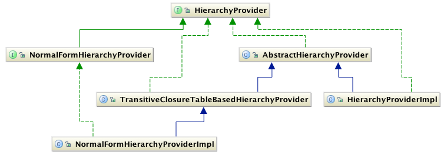

SNOMED CT, Java and MySQL are registered trademarks
This module provides services for returning parents, children, ancestors descendants and proximal primitives for a given SnomedConcept.
This module provides services for returning parents, children, ancestors descendants and proximal primitives for a given SnomedConcept.
Often querying SNOMED CT encoded data involves returning parts of SNOMED CT's hierarchies that are types of a given SnomedConcept. Since SNOMED CT's content is organised as poly-hierarchies (a concept can have more than one parent), retrieving all types of a given SnomedConcept by traversing multiple hierarchies becomes a performance bottle-neck. The SNOMED CT Hierarchy Provider Service provides the methods to return all types of a given SnomedConcept, by efficient use of an underlying Transitive Closure Table. This makes it easier for the developer to retrieve parents, children, ancestors, descendants and proximal primitives for a given SnomedConcept.
The following figure illustrates the main classes implemented in this module. The methods implemeneted reflect the most commonly features of a hierarchy provider.

The most important classes in this model are the HierarchyProvider and NormalFormHierarchyProvider. NormalFormHierarchyProvider extends HierarchyProvider to add ability to return proximal primitives for a given SnomedConcept.
| Class Name | Method Name |
|---|---|
| getChildren | returns the ids of all the children of the given SnomedConcept. |
| getParents | returns the ids of all the parents of the given SnomedConcept. |
| getAncestors | returns the ids of all the ancestors of the given SnomedConcept. |
| getDescendants | returns the ids of all the descendants of the given SnomedConcept. |
| Class Name | Method Name |
|---|---|
| getProximalPrimitiveParents | gets the proximal primitives for a given SnomedConcept. |
| getFullyDefinedParents | gets the fully defined parents for a given SnomedConcept. |